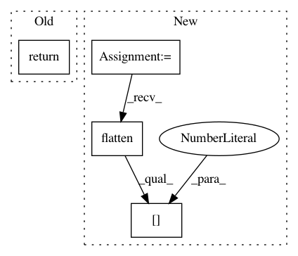

795559c4f735a8d0a2dd16ec367cbdea51966073,autokeras/nodes.py,Input,build,#Input#Any#Any#,56
Before Change
return tf.keras.Input(shape=self.shape, dtype=tf.float32)
def build(self, hp, inputs=None):
return inputs
def get_adapter(self):
return adapters.InputAdapter()
After Change
return tf.keras.Input(shape=self.shape, dtype=self.dtype)
def build(self, hp, inputs=None):
input_node = nest.flatten(inputs)[0]
return data_utils.cast_to_float32(input_node)
def get_adapter(self):
return adapters.InputAdapter()
In pattern: SUPERPATTERN
Frequency: 3
Non-data size: 4
Instances
Project Name: keras-team/autokeras
Commit Name: 795559c4f735a8d0a2dd16ec367cbdea51966073
Time: 2020-10-07
Author: haifengj@google.com
File Name: autokeras/nodes.py
Class Name: Input
Method Name: build
Project Name: asyml/texar
Commit Name: 6426fc937946517f208e0b8525d7f85afb952cef
Time: 2018-01-26
Author: zhiting.hu@petuum.com
File Name: texar/modules/decoders/rnn_decoders.py
Class Name: AttentionRNNDecoder
Method Name: output_dtype
Project Name: asyml/texar
Commit Name: b41104d53d3fe1979029a4edea5dc9943dd4037a
Time: 2017-12-07
Author: zhiting.hu@petuum.com
File Name: texar/modules/decoders/rnn_decoders.py
Class Name: BasicRNNDecoder
Method Name: output_dtype